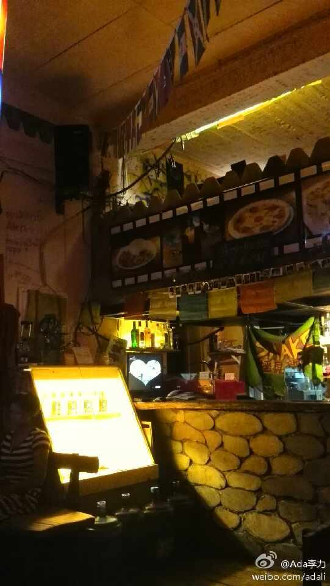

自信的公司，自信的人，都是少数。//@Freeman小屋:呵呵， 这样的公司得有多么不自信。技术人员外出交流对提高公司技术品牌和形象有百利无一害。@Ada李力:#社区运营#几个人都说不鼓励技术人员抛头露面的原因是怕技术骨干被别人挖走。如果公司怕员工走，就做好留住员工的工作，而不是靠雪藏，限制等手段。技术社区对技术人员来说，类似一个更公平的市场环境，信息交流渠道更通畅，因而交换效率也更高。
北京西面也找个据点？做游戏创意类的聚会？//@9tech廖湘宁: 羡慕@Ada李力:社区有个固定聚会场所会带来很多便利。比如，北航旁边的微薄之盐就是BLUG的据点之一。 我在这里:北京·微薄之盐 
如果基础的开放源代码项目数量太少的话，其它的也无从谈起。//@沈逸-shenyisyn: 支持Ada。同时个人认为开源不一定是就限制在开源码，开管理、开市场策略、开产品运作方式也是一定程度上的开源。尤其在中国更需要的不仅仅是源码@Ada李力:找特别的人还得靠自己啊，准备动用CSDN社区资源来寻找候选人了。- 独一无二的职位：开源社区经理 - 李力的专栏 - 博客频道 - CSDN.NET @anna招聘 网页链接
方国伟还举的例子是Yelp把站点日志导入到S3上，创建和启用200个节点的集群，分析完，集群被关闭。付费按照集群的使用时间。网页链接 @CTO俱乐部@包研Ant:AWS的方国伟说，在美国支持用户把硬盘快递给他们，从内网上传到S3上.....现场一片笑声，快递业务真心有前途
能够治理的是作弊和谎言，这些能够通过事实验证。但论坛里的“托”和“黑”，就很难界定了，目的是诋毁对方，以及目的是发泄情绪，从行为上表现是一样的，很难从动机判断人行为的接受与否。---:抱歉，作者已设置仅展示半年内微博，此微博已不可见。
#线下活动#可以当作体验性很强的产品来看待，而体验这种感觉，很多来自细节。比如@CTO俱乐部 每场活动会给提问的听众赠送最新<程序员>杂志。而@carol依 雪娟则想出了请讲师在杂志上签名，再送给听众的点子。举手之劳，讲师和听众都受益。
#线下活动#每个人对体验的关注点不一样：有些人关注页面设计，有些人关注场地是否高端气派，有些人关注会场的人气，有些人关注自己有没有受到重视，有些人关注自己能从活动中收获什么。－ 对技术人员来说，我认为他们更关注的是从活动中收获什么，所以线下活动中，最关注的是谁在讲，哪些人也在听。
@杨栋_大数据 在CSDN活动上已经做过多次分享了。 @CTO俱乐部@包研Ant:intel的杨栋对比了Spack和MPI，总结下：Spack不太稳定，但更便宜，适合小团队；MPI属于高帅富，万兆网卡，上百台的物理集群，MPI工程师，投入较大。附上一篇Spark的文章 网页链接
在@CTO俱乐部 的“畅聊大数据”活动中，有听众问如何将大数据用在在线教育上。@杨栋_大数据 对在线教育感兴趣，讲了很多从家长角度对教育的看法 @方国伟_云端 三句不离本行，说在线教育还是要依托云端 @陈雨强_Kent 认为在线教育从技术实现上没有特别之处，重要的还是内容。
//@老赵: 别人家的儿子，别人家的女儿，别人家的老公，别人家的老婆，别人家的女朋友，别人家的男朋友，别人家的老板，别人家的粉丝……@Ada李力:家庭教育中有个现象是“别人家的孩子”。公司里也会出现这样的现象，总觉得别人做得好，觉得自己的员工也可以做出同样的事情。其实，多看看自己员工做的好的地方，发挥公司自己的优势，应该是更可行的办法吧。